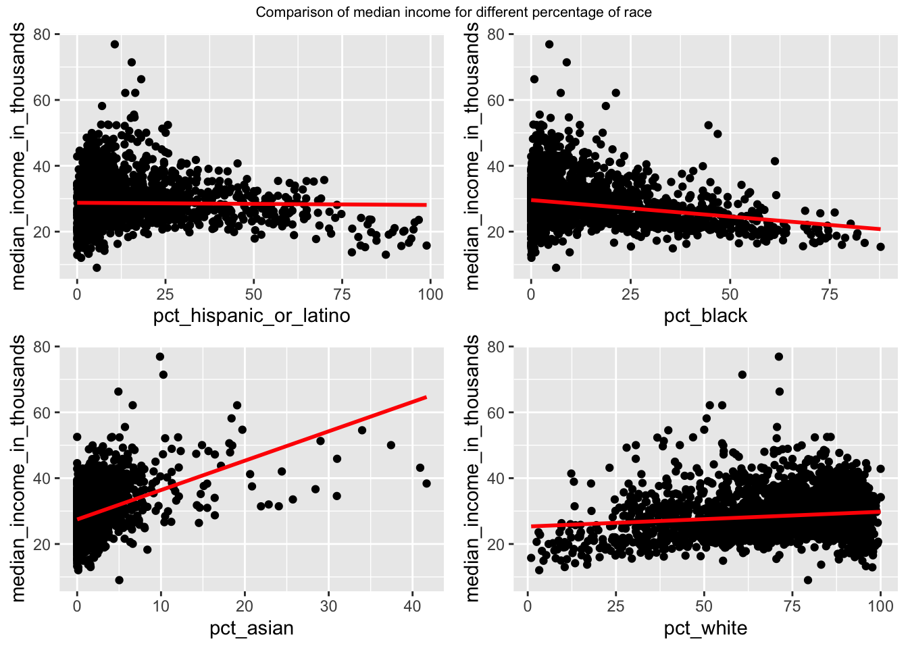
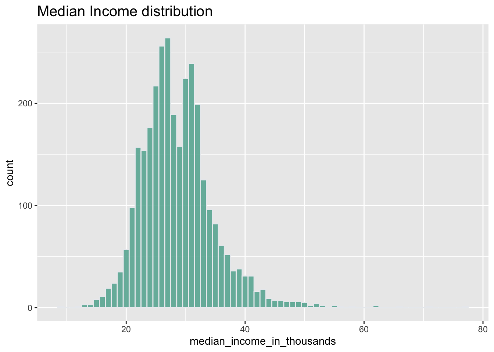
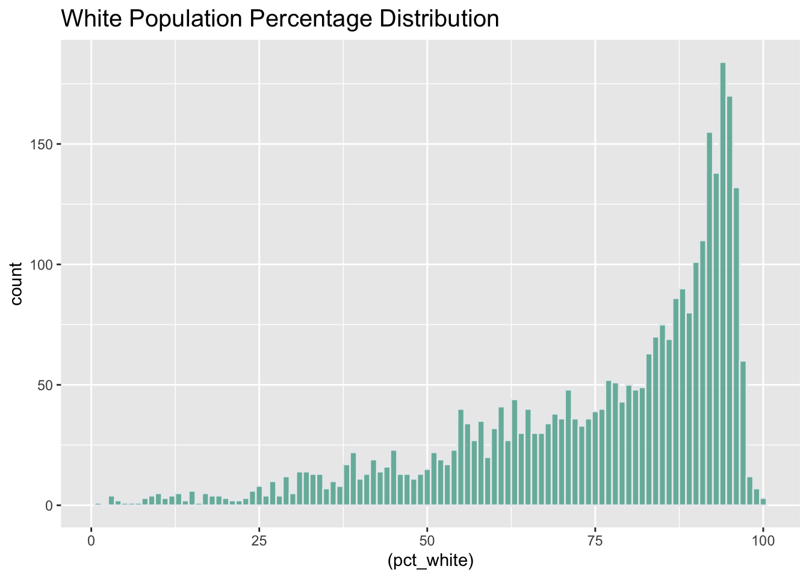

3 Data
In this investigation we are going to be focusing on the correlation between race and median income. Our data comes from the ACS 5 year dataset on counties in the United States. We are going to be including race, education, and marital status in our analysis and regressions. We removed the data from Puerto Rico because the median income data is missing.
One of the easiest ways to quickly assess the economic prosperity in a county is to look at the median income. This is what we are going to be monitoring in this investigation. The variables that we are going to be using is median_income_in_thousands and this variable contains data on the median income of each county in the United States measured in thousands of dollars.
While we are going to be focusing on race, there are other variables that we are going to be incorporating in our visualizations and regressions including marital status. The variables that we are going to be using are pct_married [Now married (except separated)], pct_separated, pct_widowed, and pct_divorced. We calculated these values by dividing the number of each category by the number of labor force participants in each respective county.
The second category that we are going to be investigating is education. Going into this analysis we assumed this would have the largest correlation with median income and therefore we wanted to make sure we could incorporate and control for this data. The variables that we are going to be using are pct_HS, pct_somecollege, and pct_bachelor_or_higher. The high school graduate statistic includes high school equivalency. We calculated these values by dividing the number of people meeting the education level with the total number of people over the age of 25 which makes these statistics more meaningful for analysis.
Finally, we are going to be looking at race through 5 different categories (pct_white, pct_black, pct_AmerIndian_or_alaska, pct_asian, and pct_hispanic_or_latino). Each of these were calculated by dividing the number of people by the total county population from the ACS race category. The value used in calculating for pct_white is the number of non-Hispanic/Latino population who are white alone. This same processes was the same for the other two non Hispanic/Latino variables as well.

As we can see in the plots above, there are stark differences between the 4 different race categories with respect to median income. We can see the median income potted on the y-axis and the race category on the x-axis. There is a linear model fitting the data which allows us to pick up on a few trends. From this initial stage of visualization we can see that there is a strong upward trend for percent Asian population and a clear downward trend for percent black population. There is a slight upward trend for white but it is relatively minor. The linear model suggests that there isn’t much of a trend for Hispanic/Latino but this model doesn’t seem to fit the data closely.

We can see from the Median Income Distribution plot that a majority of the counties fall in the $20-40k range. The smallest value is approximately 8k and the largest being 70k.

The White Population Percentage Distribution plot shows us that a majority of counties have a white population over 50%. This helps us visualize how few counties actually have large minority populations. We can see that there are many counties with a white population of over 90%.
The final plot is an interactive visualization of all of the data that we are going to be investigating. When scrolling over any of the counties you will be able to view the 13 variables in our analysis. The map is color coded by the percentage of white population and you can see an interesting trend in the data. There are many high percentage white populations in rural areas and in the middle and northern parts of the country. We can also see how most of the states with large non white populations are located in the south along the United States-Mexico border. This make sense due to the immigration over the border of Hispanic and Latino populations